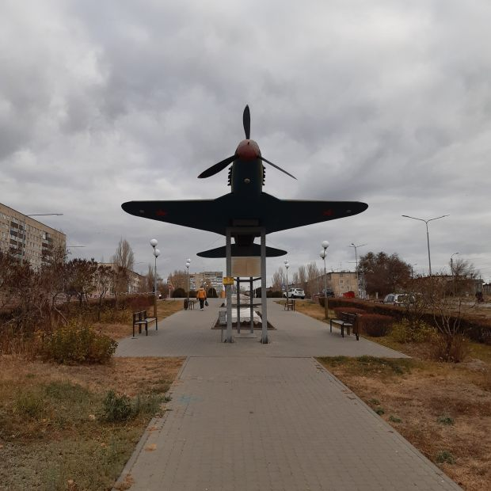

Памятник истребителю Як-1
Памятник истребителю Як-1, на котором летал герой Советского Союза Алексей Маресьев, установлен в 2016 году. Это макет, того самого истребителя Як-1 Маресьева был сбит пятого апреля 1942 года в районе Демянского котла. Настоящий самолет, который ищут поисковые отряды до сих пор не найден.